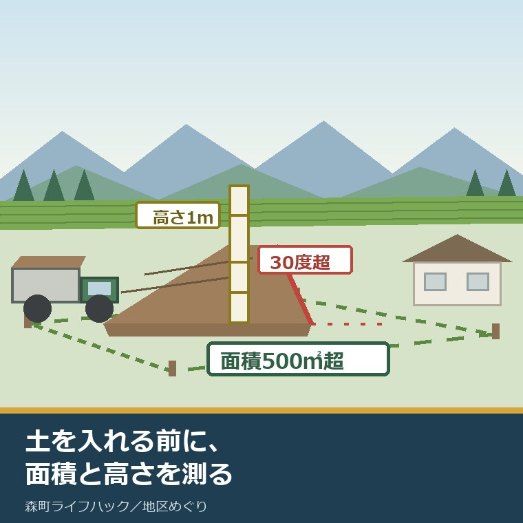
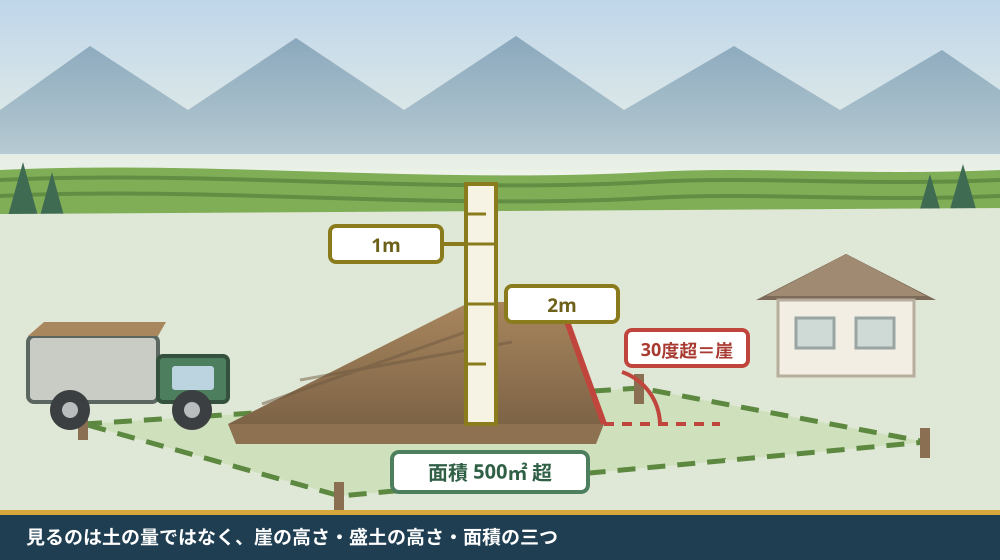
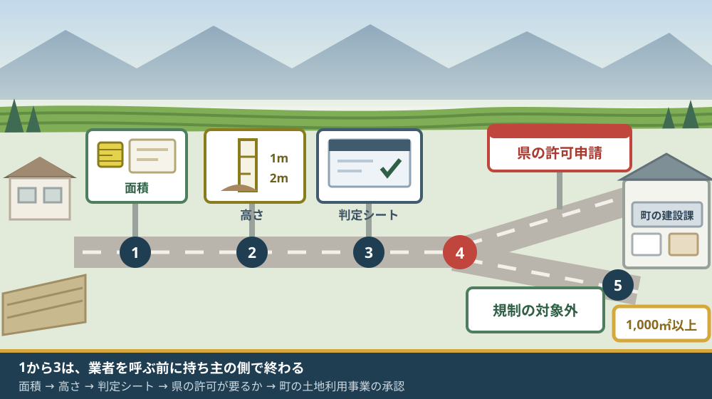

森町の盛土は許可制｜2025年5月から静岡県全域が規制区域に

この記事の要点
Q. 森町の実家の畑が傾いているので、土を入れて平らにしたいと考えています。許可は要りますか。
A. 静岡県は2025年5月26日、静岡市・浜松市を除く県内全域を盛土規制法の規制区域に指定しました。森町も全域が対象です。盛土で高さ1m超の崖が生じる、盛土が高さ2m超になる、盛土か切土の面積が500㎡超になる。どれか一つでも当たれば県知事の許可が要ります。土を入れる前に、面積と高さを測ってください。
静岡県周智郡森町（遠州森町）の実家に、傾いた畑や、水がたまる庭がある。土を入れて平らにしたい。この記事は、そう考えている土地の持ち主に向けて書いています。
この話は、2025年を境に扱いが変わりました。森町を含む静岡県内全域が、盛土規制法の規制区域になったからです。以前と同じ感覚で土を受け入れると、手続きの網に入ります。
今日は2026年8月21日。規制の開始から1年3か月が経ちました。それでも「庭に土を入れるだけで許可が要るとは思わなかった」という話は、まだ聞きます。
先に書いておくと、判断の分かれ目は面積と高さの数字です。土の量でも、目的でもありません。
順に、公表されている内容から並べます。数字を並べたあとで、それが庭と畑のどこに当たるかを見ます。
公式情報から確定できること
2026年8月21日時点で、静岡県公式サイトとパンフレット、および森町公式サイトから確認できたことを並べます。出典は記事の末尾に載せています。
一つ目。規制が始まった日は2025年5月26日です。静岡県公式の「盛土規制法における規制区域について」は「規制区域の指定日（規制開始の日）は令和7年5月26日です。」としています。
二つ目。指定されたのは県内全域です。同ページは、盛土規制法第4条第2項に基づく基礎調査の結果として「静岡県内全域（静岡市及び浜松市を除く）」を規制区域に指定するとしています。森町は西部地域の一つとして挙げられています。
三つ目。森町の区域図が単独で公開されています。同ページには市町ごとの図が並び、森町の規制区域図はPDF 13.1MBで掲載されています。静岡県GISの「盛土規制区域指定情報」でも確認できるとされています。
四つ目。区域は2種類ありますが、規制の中身は同じです。同ページは、規制区域が宅地造成等工事規制区域と特定盛土等規制区域の2種類あるとしたうえで、「盛土規制法の施行条例により、特定盛土等規制区域で許可の対象となる盛土等の規模が、宅地造成等工事規制区域と同じ規模まで引下げられるため、その結果として、いずれの区域でも同じ規制内容となります」と説明しています。
五つ目。造成宅地防災区域の指定はありません。同ページは「当県においては造成宅地防災区域の指定はありません」としています。
六つ目。法律の名前と成り立ちが公表されています。静岡県公式の「盛土規制法の概要について」によれば、「宅地造成等規制法」を抜本的に改正する形で、令和5年5月26日に盛土規制法（宅地造成及び特定盛土等規制法）が施行されました。静岡県（静岡市・浜松市を除く）での規制開始は令和7年5月26日です。
七つ目。きっかけが明記されています。静岡県のパンフレット「静岡県の盛土規制」は「令和３年７月に熱海市で起きた土石流災害を踏まえ」従来の法律が抜本的に改正されたとしています。同パンフレットは、その災害の人的被害を死者28人・負傷者4人（重傷1人・軽傷3人）の計32人、住宅被害を全壊53棟・半壊11棟・一部損壊34棟の計98棟と記載しています。
八つ目。規制の対象になる行為は3種類です。同パンフレットによれば、対象は「宅地造成」「特定盛土等」「土石の堆積」です。特定盛土等は「宅地又は農地等における土地の形質の変更」を指します。
九つ目。許可が要る規模が5つ示されています。同パンフレットの第2編によれば、宅地造成・特定盛土等では①盛土で高さが1m超の崖を生ずるもの ②切土で高さが2m超の崖を生ずるもの ③盛土と切土を同時に行い、高さが2m超の崖を生ずるもの ④盛土で高さが2m超となるもの ⑤盛土又は切土をする土地の面積が500㎡超となるものが対象です。
十番目。土石の堆積にも基準があります。同パンフレットによれば、⑥最大時に堆積する高さが2m超となるもの（許可等の対象は、面積が300㎡超のもの） ⑦最大時に堆積する面積が500㎡超となるものが対象です。一時的に積み、計画期間後に除却するものが該当します。
十一番目。「崖」の定義が数字で決まっています。同パンフレットの注記は「『崖』とは、地表面が水平面に対し、角度が30度を超える土地を指します（風化していない硬岩盤を除く）」としています。
十二番目。「農地等」の意味が登記の地目とは違います。同パンフレット第6編によれば、農地等は「農地法・森林法による『農地』、『採草放牧地』、『森林』のこと（その利用に必要な農道、農業用排水施設を含む。不動産登記法の地目ではない。）」と定義されています。
十三番目。「埋立て」は盛土規制法の対象外です。同パンフレットは、埋立てを「平地（勾配1/10以下）において、四方の土地より低い窪地を四方の高さに合わせてかさ上げし、平坦にするために行う行為」と定義し、盛土規制法では規制対象外、盛土環境条例では規制の対象としています。
十四番目。もう一つの条例が同じ日に始まっています。同パンフレットによれば、従来の盛土条例を改正した「静岡県盛土等による環境の汚染の防止に関する条例」（盛土環境条例）が令和7年5月26日から施行され、規制対象規模は面積1,000㎡以上です。災害の防止は盛土規制法へ一本化され、この条例は生活環境の保全を担います。
十五番目。許可が不要な工事も列挙されています。同パンフレット第6編によれば、高さ2m以下の土地の形質の変更であって、盛土又は切土をする前後の地盤面の標高の差が30cm以下のものなどは、災害発生のおそれがないと認められ、許可・届出が不要です。根拠は法第12条第1項、政令第5条第1項、省令第8条です。
十六番目。着手日で手続きが変わります。同パンフレットによれば、規模を超える宅地造成・特定盛土等のうち、令和7年5月26日以降に着手するものは許可申請、令和7年5月25日以前に着手していたものは届出です。規模以下のものは規制の対象外です。
十七番目。許可には住民への周知が要ります。同パンフレット第3編によれば、許可の取得にあたっては住民説明会、書面配布、掲示板およびインターネット掲示のいずれかの方法で周辺住民への周知が必要です。渓流等における高さが15mを超える盛土については、住民説明会の開催が必須とされています。
十八番目。周知の範囲は盛土の高さで決まります。同パンフレットによれば、平地盛土では盛土等の境界（法尻）から水平距離2h（盛土・切土の最大高さhの2倍の距離）の範囲が対象です。谷埋め盛土では渓流等の範囲と、その下流100m以内の自治会等の範囲まで広がります。
十九番目。手数料が公表されています。同パンフレット第6編によれば、令和8年4月1日以降に申請する場合、宅地造成・特定盛土等の許可申請手数料は面積500㎡以下で17,100円、500㎡超1,000㎡以下で29,100円、1,000㎡超2,000㎡以下で41,200円です。土石の堆積は500㎡以下で12,000円、中間検査は2,000㎡以下で3,400円です。納付は収入証紙によります。
二十番目。罰則の水準が示されています。同パンフレット第2編によれば、無許可工事・許可の不正取得、措置命令への違反は3年以下の懲役又は1,000万円以下の罰金、技術的基準への違反、中間検査・完了検査での違反、定期報告での違反などは1年以下の懲役又は300万円以下の罰金で、法人重科は最大3億円です。
二十一番目。土地の所有者に責務があります。同パンフレットは「土地の所有者等は、宅地造成等（規制区域の指定前に行われたものを含む。）に伴う災害が生じないよう、その土地を常時安全な状態に維持しなければなりません」とし、規制区域の指定前に行われた盛土等も勧告・改善命令の対象としています。対象者は土地の所有者、管理者、占有者、工事主または工事施行者です。
二十二番目。県の相談は電話ではなくフォームです。静岡県公式の「盛土規制法の概要について」は、事業者に対し「電話や来庁ではなく、以下の問合せフォームにより、事前にご連絡をお願いします」とし、個別事案で許可対象の規模かどうかを相談する場合は「許可対象規模の相談シート」および工事内容に対応した添付資料が必要としています。
二十三番目。判定用の道具が用意されています。静岡県公式の「盛土規制法の許可対象規模の判断について」には、許可対象規模の判定シート（Excel形式）と許可対象規模の判定に必要な資料（PDF 286.4KB）、解説動画が掲載されています。
二十四番目。森町側では、古い届出制度が終わっています。森町公式の「土採取等規制条例に基づく届け出について」によれば、区域面積1,000㎡以上または土量2,000㎥以上の土の採取には30日前までの届出が必要でしたが、「静岡県土採取等規制条例は、宅地造成及び特定盛土等規制法の運用開始に合わせて、令和7年5月26日に廃止されます」とされています。担当は建設課都市計画係（電話0538-85-6322）です。
二十五番目。森町には町独自の事前承認があります。森町公式の「土地利用事業について」によれば、町内において1,000㎡以上の一団の土地の区画・形質の変更を伴う事業を実施しようとする場合、森町土地利用事業の適正化に関する指導要綱に基づき、事前に事業の承認が必要です。
二十六番目。その承認には同意書の様式があります。同ページの様式一覧には、参考様式として地権者の同意書、隣地者の同意書、地元町内会の同意書、地元部農会の同意書が並んでいます。
二十七番目。さらに大きい規模には開発許可が要ります。森町公式の「開発行為に関する許可について」によれば、主として建築物の建築の用に供する目的で行う3,000㎡以上（都市計画区域外は10,000㎡以上）の一団の土地の区画・形質の変更には、都市計画法第29条の規定により県知事の許可が必要で、開発許可の申請前に「土地利用事業」の承認が必要とされています。

この絵で描きたかったのは、判断が「何のために入れるか」ではなく「どれだけの高さと広さになるか」で決まるという点です。畑を平らにする目的でも、家を建てる目的でも、当たる数字は同じです。
森町の庭と畑に置き換えると、どこから許可が要るか
ここからは、確認した事実を実際の土地の大きさに置き換えます。換算と例示は私（大石）が行ったもので、公表された数値ではありません。
制度としては筋が通っています。ただ、相談に来る方が最初に聞くのは「それで、いくらかかって、誰がいつ役所へ行くのか」です。盛土の話も同じで、法律の趣旨より先に、面積と高さと手数料が知りたい。だから、順番を数字から始めます。
まず面積です。500㎡は約151坪、1,000㎡は約302坪、3,000㎡は約907坪です。庭としては広いのですが、畑1枚なら森町でよくある大きさです。
次に高さです。盛土で高さ1m超の崖が生じれば、面積がどれだけ小さくても許可の対象です。傾いた畑の低い側に土を寄せると、端が立ち上がります。その立ち上がりが30度を超え、1mを超えると、そこで線を越えます。
三つ目に、盛土そのものの高さです。崖にならなくても、盛土で高さ2m超になれば対象です。山際で谷筋を埋める形になると、この数字に届きやすい。
四つ目に、許可が要らない側の線です。高さ2m以下で、盛土または切土をする前後の地盤面の標高の差が30cm以下なら、災害発生のおそれがないと認められる工事に当たります。庭に土を薄く入れて均す程度なら、この中に収まることがあります。
五つ目に、盛土規制法の外側にある区分です。勾配1/10以下の平地で、四方より低い窪地を四方の高さに合わせて平らにする行為は「埋立て」とされ、盛土規制法の規制対象外です。ただし面積1,000㎡以上なら盛土環境条例の対象になります。
六つ目に、森町側の線です。1,000㎡以上の一団の土地の区画・形質の変更なら、森町の土地利用事業の承認が先に要ります。県の許可とは別の手続きで、窓口も建設課都市計画係です。
費用を並べます。面積500㎡以下で許可が要る工事なら、許可申請17,100円と中間検査3,400円で、県に納める手数料は合わせて20,500円です（令和8年4月1日以降の申請）。これは私の足し算です。設計、測量、書類作成、そして工事そのものの費用は、この外側にあります。
手数料の額そのものは、工事費と比べれば小さい。けれど、この20,500円の手前に、住民への周知と、書類一式と、検査の日程が並びます。時間のほうが重い、というのが私の見方です。
良い点：この規制の、よくできているところ
ここからは、公表されている内容を読んで私が良いと感じた点を書きます。事実ではなく評価です。
一つ目。土地の用途で線を引かなかった点です。従来の宅地造成等規制法は宅地が中心でしたが、盛土規制法は農地・森林の造成も対象に入れました。森町のように農地と山林が多い町では、この変更がそのまま実効性の差になります。
二つ目。2種類の区域で規制内容を同じにした点です。宅地造成等工事規制区域と特定盛土等規制区域で許可の規模が違うと、持ち主は自分の土地がどちらかを先に調べる必要があります。施行条例で同じ規模まで引き下げたので、その調べ物が1つ減りました。
三つ目。許可対象規模の判定シートを配っている点です。Excel形式の判定シートと判定に必要な資料の一覧が公開されています。「該当するかどうか」を、電話をかける前に自分で当たれます。
四つ目。手数料を面積の区分で公表している点です。500㎡以下は17,100円、と先に分かる。見積もりを取る前に、公的な費用の桁が読めます。
五つ目。指定前の盛土まで責務の対象にした点です。法律ができる前に積まれた土は、放っておけば誰の責任でもなくなります。所有者の責務として明記されたことで、売買のときに話題にできるようになりました。
六つ目。森町が古い制度の終わりをページに残している点です。土採取等規制条例が令和7年5月26日に廃止されたことと、盛土規制法に基づく手続きが別途必要であることが、同じページに書かれています。古い記憶で動く人が、そこで気づけます。

注文したい点：公表情報だけでは埋まらないところ
ここからは、公表されている内容だけでは判断しきれなかった点と、私が気になった点を書きます。一事業者としての注文です。
一つ目。手続きが三段に分かれている点です。県の盛土規制法、県の盛土環境条例、森町の土地利用事業。面積の基準は500㎡、1,000㎡、1,000㎡と別々で、窓口も別です。この3つを1枚に並べた表を、持ち主向けに用意してほしいと望みます。
二つ目。相談の入口が事業者向けに書かれている点です。県のページは「事業者の皆様へ」として、電話や来庁ではなくフォームでの事前連絡を求めています。個人の持ち主が自分の畑について尋ねるとき、どの窓口に行けばよいのかは、ページからは読み取れませんでした。
三つ目。森町の土地利用事業の承認に、どれくらいの期間がかかるのかが分かりません。様式は公開されていますが、標準的な処理期間の記載を見つけられませんでした。県の許可と町の承認のどちらを先に始めるべきかも、ページの記載からは確認できませんでした。
四つ目。同意書の様式が、実務の重さを物語っています。地権者、隣地者、地元町内会、地元部農会。森町で1,000㎡以上の形質変更をするなら、この4者を回ることになります。これは制度の欠陥ではなく、地域で土を動かすことの実際の重さです。
五つ目。「規制の対象外」が安全の保証ではない点が伝わりにくい。高さ2m以下・標高差30cm以下なら許可は不要ですが、それは災害のおそれが小さいという判断であって、擁壁や排水を考えなくてよいという意味ではありません。対象外だから何をしてもよい、と読まれる余地があります。
六つ目。ここは持ち主側への注文です。「知り合いの業者が余った土を持ってきてくれる」という話に乗らないでください。受け入れた土の責任は、土地の所有者に残ります。指定前の盛土まで勧告・改善命令の対象になる、と法律のほうが先に書いています。
対案・結論：今日、土を入れる前に確かめられること
結論を急がないと決めたうえで、今日から動ける順番を書きます。順番はイラストのとおりです。
| 順番 | 確かめること | 確認先 |
|---|---|---|
| 1 | 土を入れる範囲の面積 | 公図・測量図・固定資産税の課税明細。500㎡（約151坪）と1,000㎡（約302坪）が分かれ目 |
| 2 | できあがる盛土の高さと、端の立ち上がり | 現地で物差し。盛土1m超の崖、盛土2m超、切土2m超の崖が分かれ目 |
| 3 | 許可の対象になるかどうか | 静岡県「盛土規制法の許可対象規模の判断について」の判定シート（Excel） |
| 4 | 県への相談（対象になりそうな場合） | くらし・環境部環境局盛土対策課 054-221-2264。個別相談は問合せフォームと相談シート |
| 5 | 森町の土地利用事業の承認が要るか | 森町 建設課都市計画係 0538-85-6322（1,000㎡以上の一団の土地） |
| 6 | 土の出どころと、受け入れの記録 | 持ち込む側の資料。所有者に責務が残るため、書面で残す |
1と2は、業者を呼ぶ前に終わります。面積と高さが出れば、許可が要るかどうかはほぼ決まります。この2つを持たずに相談すると、話が進みません。
3は無料の道具です。静岡県が判定シートを配っているので、まず自分で当ててください。その結果を持って4へ進むと、相談が具体的になります。
5は忘れられやすい。県の許可が要らない規模でも、町の承認が要る場合があります。面積1,000㎡が町の線です。
6は書類の話です。誰の現場から出た土なのか、いつ入れたのか。これを残しておくと、後で問われたときに答えられます。
境界が確定していない土地に土を入れると、後から面倒になります。どこまでが自分の土地かを先に決めておくほうが早い。その手順は森町の地籍調査と境界の確認を扱った記事にまとめました。
山際の土地は、水の抜け道と一緒に考える必要があります。盛土は、それまで流れていた水の道を変えます。川沿いの水の見方は太田川の想定最大規模の浸水図から実家の床の高さを見る記事に書きました。
家族に残す記録
ここからは、確認した内容を紙1枚に残すための項目です。次に同じことを調べ直さないためのものです。
書き留めるのは、土を入れる場所の地番、面積、できあがる盛土の高さ、端の立ち上がりの高さと角度、判定シートの結果です。この5つで、県にも町にも同じ説明ができます。
あわせて、土の出どころ（誰のどの現場か）、搬入した日、業者名と連絡先、県の盛土対策課の電話番号（054-221-2264）、森町 建設課都市計画係の電話番号（0538-85-6322）を並べておきます。
実家の名義、境界、農地、道路まで含めて順に整理したい方は、ふじがおか実家カルテの森町相談窓口もご利用ください。住所が分かれば、建物と敷地のどちらについても、確認する順番を整理できます。
大石の視点
ここからは、私（大石浩之）の個人の考えです。公的な事実とは分けてお読みください。この件について、私自身が森町の窓口で聞き取った体験があるわけではありません。以下は公表資料を読んだうえでの私の見方です。
不動産の実務で、盛土は昔から扱いの難しい項目でした。買主から「この土地、盛ってありますか」と聞かれて、答えられないことがある。いつ、誰が、どこの土を入れたのか。記録が残っていないからです。
今回の規制で、その記録が制度の側に残るようになりました。許可があり、中間検査があり、完了検査があり、定期報告がある。売るときに出せる書類が増えるという意味で、これは持ち主の側に効きます。
行政の判断としては、私は是々非々で見ています。良い点は、土地の用途で線を引かなかったこと、区域の種類で規制内容を変えなかったこと、判定シートを配ったこと。注文したい点は、手続きが県と町で三段に分かれ、個人の持ち主向けの入口が用意されていないことです。
ここは正直に書きます。小さな畑を均すところまで許可の網に入れるのが正しいのかどうか、私にはまだ判断がつきません。手続きが重くなれば、届出をせずに黙って入れる人が出ます。一方で、熱海の28人という数字を読むと、緩くしろとも言えない。この二つの間で、私はまだ立ち位置を決めきれていません。
それでも一つ言い切ります。土を入れる前に、面積と高さを測ってください。これは業者の仕事ではなく、持ち主の仕事です。数字を持っていない持ち主は、業者の言う「大丈夫です」を検証できません。
費用の見方も添えます。県に納める手数料は、500㎡以下なら許可申請と中間検査で合わせて20,500円。工事費の桁とは比べものになりません。本当の負担は、住民周知と書類と検査の日程、つまり時間のほうです。
売却を考えている方には、順番の話をします。土を入れてから売るより、入れる前に相談してください。無許可の盛土がある土地は、買主の側の調査で必ず出ます。そのときに値が下がるのは、土を入れた分ではなく、説明できない分です。
森町の側から見ると、この規制は町が決めたものではありません。指定したのは静岡県で、区域は県内全域です。その上で一事業者としては、森町の土地利用事業の承認と県の許可を並べた案内を、町のページに1枚置いてほしいと望みます。持ち主が最初に開くのは、県ではなく町のページだからです。
土地の維持という点では、草刈りと同じ性質の話でもあります。手を入れないと荒れ、手を入れると手続きが要る。その両側の負担については森町の8月の草刈りと、その負担を扱った記事に書きました。売る前に整理する順番は実家を売る前に確かめる順番の記事にまとめています。
結論が保留のままでも、確認済みの事実が一つ増えたなら、それは前進です。面積が出た。高さが出た。どちらも、次の判断を軽くします。
まとめ
- 静岡県公式によれば、盛土規制法の規制区域の指定日（規制開始の日）は令和7年5月26日で、指定範囲は静岡県内全域（静岡市及び浜松市を除く）（2026年8月21日確認）
- 規制区域は宅地造成等工事規制区域と特定盛土等規制区域の2種類あるが、施行条例により許可対象の規模が同じまで引き下げられ、いずれの区域でも同じ規制内容になる
- 静岡県では造成宅地防災区域の指定はない。森町の規制区域図はPDF 13.1MBで市町別に公開され、静岡県GISでも確認できる
- 宅地造成・特定盛土等で許可が必要なのは、盛土で高さ1m超の崖を生ずるもの、切土で高さ2m超の崖を生ずるもの、盛土と切土を同時に行い高さ2m超の崖を生ずるもの、盛土で高さ2m超となるもの、盛土又は切土をする土地の面積が500㎡超となるもの
- 土石の堆積は、最大時の高さ2m超（許可等の対象は面積300㎡超）または最大時の面積500㎡超が対象
- 「崖」とは地表面が水平面に対し角度が30度を超える土地を指す（風化していない硬岩盤を除く）
- 「農地等」は農地法・森林法による農地・採草放牧地・森林を指し、不動産登記法の地目ではない
- 勾配1/10以下の平地で四方より低い窪地を四方の高さに合わせて平坦にする「埋立て」は盛土規制法の規制対象外だが、盛土環境条例（規制対象規模は面積1,000㎡以上）の対象になる
- 高さ2m以下の土地の形質の変更で、盛土又は切土をする前後の地盤面の標高の差が30cm以下のものは、災害発生のおそれがないと認められ許可・届出が不要
- 令和7年5月26日以降に着手するものは許可申請、令和7年5月25日以前に着手していたものは届出
- 許可の取得には住民説明会・書面配布・掲示板およびインターネット掲示のいずれかによる住民周知が必要で、渓流等での高さ15m超の盛土は住民説明会が必須
- 令和8年4月1日以降の申請では、宅地造成・特定盛土等の許可申請手数料が面積500㎡以下で17,100円、500㎡超1,000㎡以下で29,100円、1,000㎡超2,000㎡以下で41,200円、中間検査が2,000㎡以下で3,400円
- 無許可工事・許可の不正取得・措置命令違反は3年以下の懲役又は1,000万円以下の罰金、法人重科は最大3億円
- 土地の所有者等は、規制区域の指定前に行われたものを含め、災害が生じないよう土地を常時安全な状態に維持する責務を負い、指定前の盛土等も勧告・改善命令の対象になる
- 森町公式によれば、静岡県土採取等規制条例は盛土規制法の運用開始に合わせて令和7年5月26日に廃止された（担当は建設課都市計画係 0538-85-6322）
- 森町公式によれば、町内で1,000㎡以上の一団の土地の区画・形質の変更を伴う事業は、森町土地利用事業の適正化に関する指導要綱に基づく事前の承認が必要で、参考様式に地権者・隣地者・地元町内会・地元部農会の同意書がある
- 森町公式によれば、建築物の建築を目的とする3,000㎡以上（都市計画区域外は10,000㎡以上）の区画・形質の変更には都市計画法第29条の許可が必要で、その申請前に土地利用事業の承認が要る
よくある質問
Q1. 森町で庭や畑に土を入れるのに、許可は要りますか。
A1. 静岡県公式によれば、森町を含む静岡県内全域（静岡市・浜松市を除く）は2025年5月26日から盛土規制法の規制区域です。盛土で高さ1m超の崖が生じるもの、切土で高さ2m超の崖が生じるもの、盛土と切土を同時に行い高さ2m超の崖が生じるもの、盛土で高さ2m超となるもの、盛土または切土をする土地の面積が500㎡超となるもの。どれか一つでも当たれば許可が必要です。
Q2. 盛土の許可申請には、いくらかかりますか。
A2. 静岡県のパンフレット「静岡県の盛土規制」によれば、令和8年4月1日以降に申請する場合、宅地造成・特定盛土等の許可申請手数料は面積500㎡以下で17,100円、500㎡超1,000㎡以下で29,100円です。中間検査の手数料は2,000㎡以下で3,400円です。これは県へ納める手数料で、設計や測量、工事の費用は別に必要です。
Q3. 規制が始まる前に親が入れた土は、関係ありますか。
A3. 静岡県のパンフレットによれば、土地の所有者等は規制区域の指定前に行われたものを含め、宅地造成等に伴う災害が生じないよう土地を常時安全な状態に維持しなければならないとされています。規制区域の指定前に行われた盛土等も勧告・改善命令の対象になります。対象者は土地の所有者、管理者、占有者、工事主または工事施行者です。
最後に一つだけ。ここに書いた指定日、規模の基準、手数料、罰則、森町側の手続きは、いずれも2026年8月21日時点で公表されている内容です。森町の土地利用事業の承認に要する期間、県の許可と町の承認のどちらを先に始めるべきか、個人の土地所有者が自分の畑について相談するときの窓口は、公表資料からは確認できていません。特定の土地について許可が必要かどうかの判断は行政の所管です。動く前に、必ず静岡県くらし・環境部環境局盛土対策課（054-221-2264）および森町の建設課都市計画係（0538-85-6322）へご確認ください。
参考にした公式情報
- 盛土規制法における規制区域について／静岡県（「規制区域の指定日（規制開始の日）は令和7年5月26日です。」と記載されていること、盛土規制法第4条第2項に基づく基礎調査の結果として「静岡県内全域（静岡市及び浜松市を除く）」を規制区域として指定するとされていること、規制区域が宅地造成等工事規制区域と特定盛土等規制区域の2種類あり「盛土規制法の施行条例により、特定盛土等規制区域で許可の対象となる盛土等の規模が、宅地造成等工事規制区域と同じ規模まで引下げられるため、その結果として、いずれの区域でも同じ規制内容となります」とされていること、「当県においては造成宅地防災区域の指定はありません」とされていること、市町別の区域図が掲載され森町がPDF 13.1MBであること、静岡県GISの盛土規制区域指定情報へのリンクがあること、問い合わせ先がくらし・環境部環境局盛土対策課（電話054-221-2264）であることを2026年8月21日に確認。更新日 2026年3月18日）
- 盛土規制法の概要について／静岡県（「宅地造成等規制法」を抜本的に改正する形で令和5年5月26日に盛土規制法（宅地造成及び特定盛土等規制法）が施行されたこと、静岡県（静岡市・浜松市を除く）では令和7年5月26日から規制が開始されたこと、静岡市・浜松市は各市が規制区域を指定すること、規制対象行為が「宅地造成」「特定盛土等」「土石の堆積」であること、事業者に対し「電話や来庁ではなく、以下の問合せフォームにより、事前にご連絡をお願いします」とし個別事案の相談には「許可対象規模の相談シート」および添付資料が必要とされていること、パンフレット「静岡県の盛土規制」が全体版と第1編から第6編の抜粋で掲載されていること、規制区域指定後に都市計画法第29条の開発許可を受けた工事は盛土規制法上の許可を受けたものとみなされるが標識の設置・定期報告・中間検査は必要であることを2026年8月21日に確認。更新日 2026年3月11日）
- パンフレット「静岡県の盛土規制」（全体版）／静岡県（「令和３年７月に熱海市で起きた土石流災害を踏まえ」法が抜本改正されたとされ、人的被害が死者28人・重傷1人・軽傷3人の計32人、住宅被害が全壊53棟・半壊11棟・一部損壊34棟の計98棟と記載されていること、宅地造成・特定盛土等の規制対象が①盛土で高さ1m超の崖を生ずるもの②切土で高さ2m超の崖を生ずるもの③盛土と切土を同時に行い高さ2m超の崖を生ずるもの④盛土で高さ2m超となるもの⑤盛土又は切土をする土地の面積が500㎡超となるものであること、土石の堆積が⑥最大時に堆積する高さ2m超（許可等の対象は面積300㎡超）⑦最大時に堆積する面積500㎡超であること、「崖」が地表面と水平面のなす角度30度超の土地とされること、農地等が農地法・森林法による農地・採草放牧地・森林であり不動産登記法の地目ではないとされること、「埋立て」が勾配1/10以下の平地で四方より低い窪地を四方の高さに合わせて平坦にする行為で盛土規制法では規制対象外・盛土環境条例では規制対象とされること、盛土環境条例が令和7年5月26日施行で規制対象規模が面積1,000㎡以上であること、高さ2m以下かつ盛土又は切土をする前後の地盤面の標高差30cm以下のものが災害発生のおそれがないと認められる工事に含まれること、着手日が令和7年5月26日以降なら許可申請・令和7年5月25日以前なら届出となること、住民周知が住民説明会・書面配布・掲示板およびインターネット掲示のいずれかで必要とされ渓流等での高さ15m超の盛土は住民説明会が必須とされること、平地盛土の周知範囲が法尻から水平距離2hとされること、令和8年4月1日以降の申請手数料が宅地造成・特定盛土等で500㎡以下17,100円・500㎡超1,000㎡以下29,100円・1,000㎡超2,000㎡以下41,200円、土石の堆積で500㎡以下12,000円、中間検査が2,000㎡以下3,400円であること、罰則が無許可工事等で3年以下の懲役又は1,000万円以下の罰金・技術的基準違反等で1年以下の懲役又は300万円以下の罰金・法人重科最大3億円であること、「土地の所有者等は、宅地造成等（規制区域の指定前に行われたものを含む。）に伴う災害が生じないよう、その土地を常時安全な状態に維持しなければなりません」とされ指定前の盛土等も勧告・改善命令の対象となることを2026年8月21日に確認）
- 盛土規制法の許可対象規模の判断について／静岡県（許可対象規模の判定シート（宅地造成・特定盛土等）がExcel形式で掲載されていること、「許可対象規模の判定に必要な資料」（PDF 286.4KB）が掲載されていること、解説動画「盛土規制法の許可の要否判断・書類作成上の注意点」が掲載されていること、「崖」について複数の箇所を「一体の崖」とみなして高さを判断するケースがあり詳細は申請の手引き第1編11から12ページを確認するよう案内されていること、問い合わせ先が盛土対策課（電話054-221-2264）であることを2026年8月21日に確認。更新日 2025年10月24日）
- 静岡県の規制区域（森町）／静岡県（森町の盛土規制区域を示す図がPDF 13.1MBで公開されていることを2026年8月21日に確認）
- 土採取等規制条例に基づく届け出について／静岡県森町（町内で区域面積1,000平方メートル以上又は土量2,000立方メートル以上の土の採取には静岡県土採取等規制条例に基づき着手30日前までの届出が必要とされていたこと、「静岡県土採取等規制条例は、宅地造成及び特定盛土等規制法の運用開始に合わせて、令和7年5月26日に廃止されます。」と記載されていること、「令和7年4月25日より後の届出提出は、処理期間不足のため、原則として受付をしていない」と注記され「宅地造成及び特定盛土等規制法に基づく手続きは別途必要です」とされていること、担当が建設課都市計画係（電話0538-85-6322）であることを2026年8月21日に確認。更新日 2025年04月21日）
- 土地利用事業について／静岡県森町（町内で1,000平方メートル以上の一団の土地の区画・形質の変更を伴う事業を実施しようとする場合、森町土地利用事業の適正化に関する指導要綱に基づき事前に事業の承認が必要とされていること、目的が災害の防止と良好な自然及び生活環境の確保、町の均衡ある発展であるとされていること、様式に土地利用事業事前協議申出書・土地利用事業実施計画承認申請書・実施計画書・工事着手届などが並び、参考様式として地権者の同意書・隣地者の同意書・地元町内会の同意書・地元部農会の同意書・権利者一覧表が掲載されていること、担当が建設課都市計画係（電話0538-85-6322）であることを2026年8月21日に確認。更新日 2024年04月01日）
- 開発行為に関する許可について／静岡県森町（主として建築物の建築の用に供する目的で行う3,000平方メートル以上（都市計画区域外は10,000平方メートル以上）の一団の土地の区画・形質の変更を伴う事業には都市計画法第29条の規定により県知事の許可が必要とされていること、「開発許可の申請前に『土地利用事業』の承認が必要となります」と記載されていること、静岡県土地対策課の開発行為等の許可のページへリンクしていること、担当が建設課都市計画係（電話0538-85-6322）であることを2026年8月21日に確認。更新日 2024年05月30日）

最終確認日：2026-08-21 ／ 本記事は公表情報と執筆者の見解を分けて記載しています。森町の土地利用事業の承認に要する標準的な期間、県の許可と町の承認の着手順、個人の土地所有者向けの相談窓口は公表資料から確認できていません。特定の土地について許可が必要かどうかの判断は行政の所管です。制度・手数料は変更されることがあります。動く前に、必ず静岡県くらし・環境部環境局盛土対策課および森町の建設課都市計画係へご確認ください。